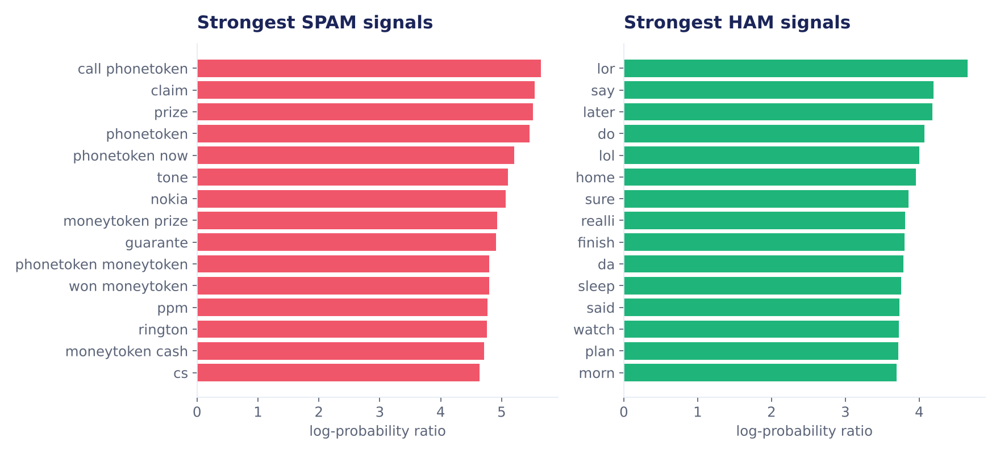
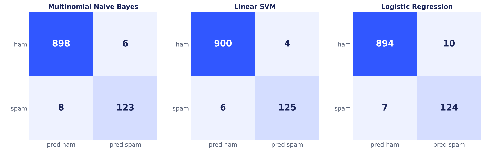
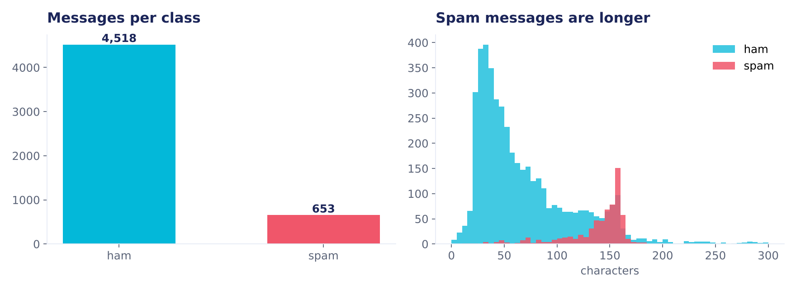

1
Mask
Links, phone numbers, money and numbers become placeholders, so the model learns the pattern rather than one number.
Paste any SMS or email. SpamShield tells you if it is spam, highlights the exact words that gave it away and names the phishing tricks it uses.
Type or paste a message, or load an example.
Each message below is scored by the same model, one after another. Select any message to open it in the inspector and see why it was flagged.
Phishing messages copy the tone of banks, couriers and prize draws. A filter has to catch them without hiding real messages from friends and family, so both mistakes are measured below.
These panels follow the message in the inspector through the model, live. Change the message and every step updates. The browser runs the exact model trained in Python: on all 5,171 messages both give the same answer.
Links, phone numbers, money and numbers become placeholders, so the model learns the pattern rather than one number.
Split into words, then drop common words such as "the" and "is" that carry no signal.
The Porter stemmer reduces each word to its root, so "winning" and "wins" count as one word.
Words, word pairs and 3–5 letter pieces become weighted features. Letter pieces catch tricks like "fr33".
Feature weights are added into one score, and Platt scaling turns that score into a probability.
Three models were tuned with 5-fold cross-validation on 80% of the data, then tested once on the remaining 20%. Every number on this page comes from that held-out test set.
A message is called spam when its spam chance is above the threshold. Move it to trade missed spam against blocked real messages. These are calibrated probabilities, so at 50% the counts can differ by one message from the raw SVM decision used in the leaderboard.
Same features, same split. The Linear SVM had the best F1, the fairest score when only 13% of messages are spam.
SMS Spam Collection (UCI): 5,574 real messages, 5,171 after removing duplicates. 653 spam, 4,518 normal.
Words that Naive Bayes links most strongly to each class. Spam pushes prizes, cash and a number to call; normal messages sound like conversation.



A full machine learning workflow, from raw text to a model anyone can try in one click.